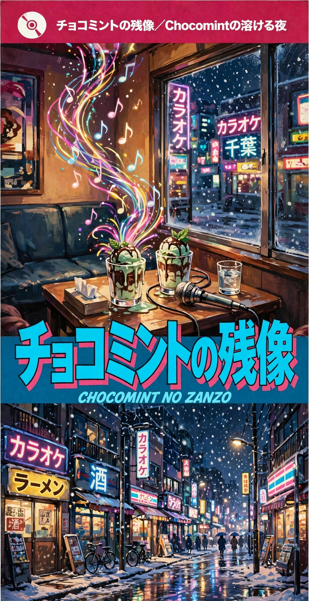
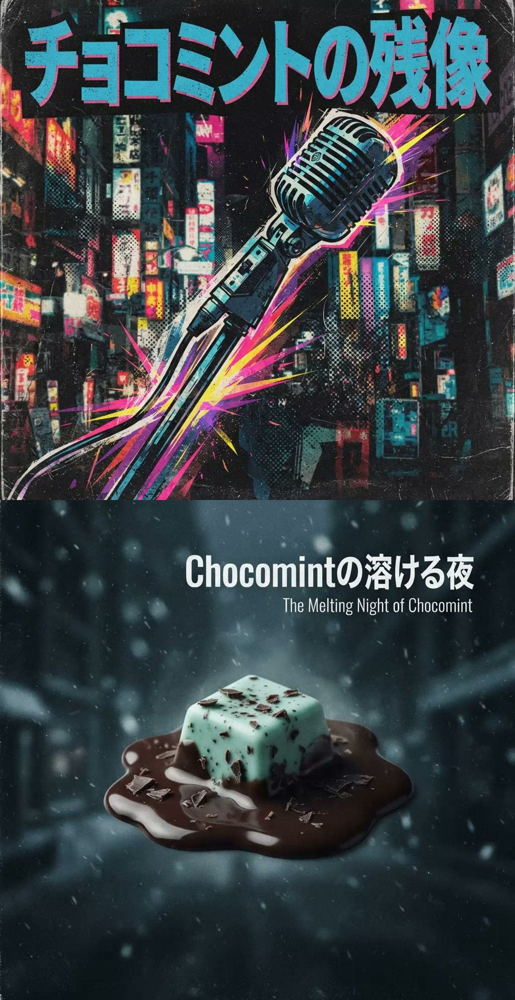

曲目
再生
ブックレット
📲 アプリとしてインストールする方法
‹ ジャケット
ブックレット
📲 アプリとしてインストールする方法
デジタルシングルCD v
0:00
0:00
トップ
前
再生
次
1
全曲リピート
ホーム画面に追加して使う
インストールすると、ホーム画面から開けて、オフラインでも使えます。
今すぐインストール
iPhone / iPad
Safari
でこのページを開く
共有ボタン(□から↑が出ているマーク)をタップ
「
ホーム画面に追加
」を選ぶ
右上の「追加」をタップ
Android
Chrome
でこのページを開く
右上のメニュー(⋮)をタップ
「
アプリをインストール
」または「ホーム画面に追加」を選ぶ
「インストール」をタップ
パソコン(Chrome / Edge)
アドレスバーの右端にあるインストールのマークをクリック
「
インストール
」を選ぶ
とじる
更新があります
あとで
更新
うまく読み込めませんでした。
記録は消えません
なおす